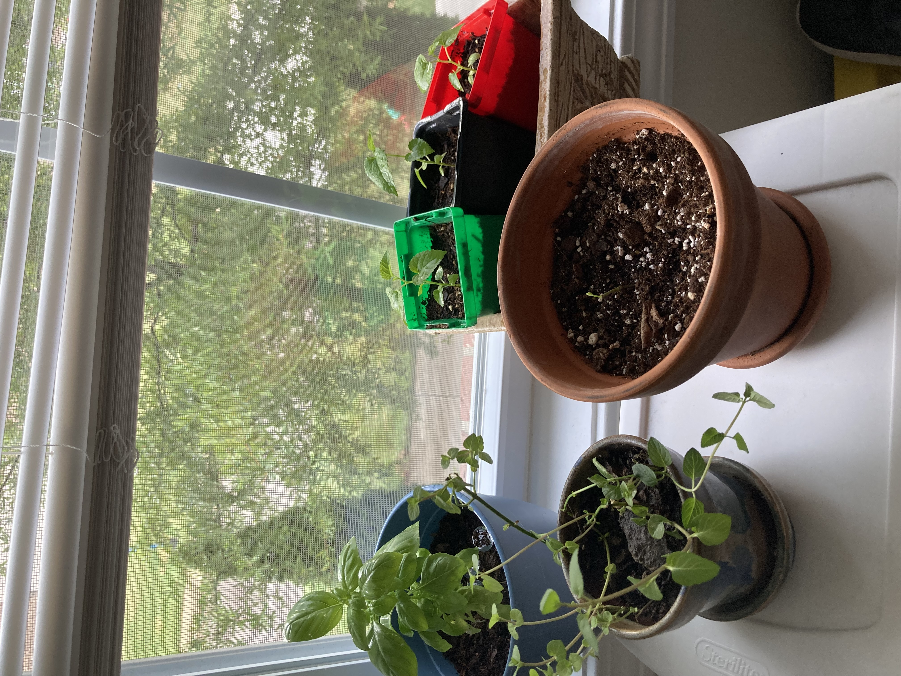
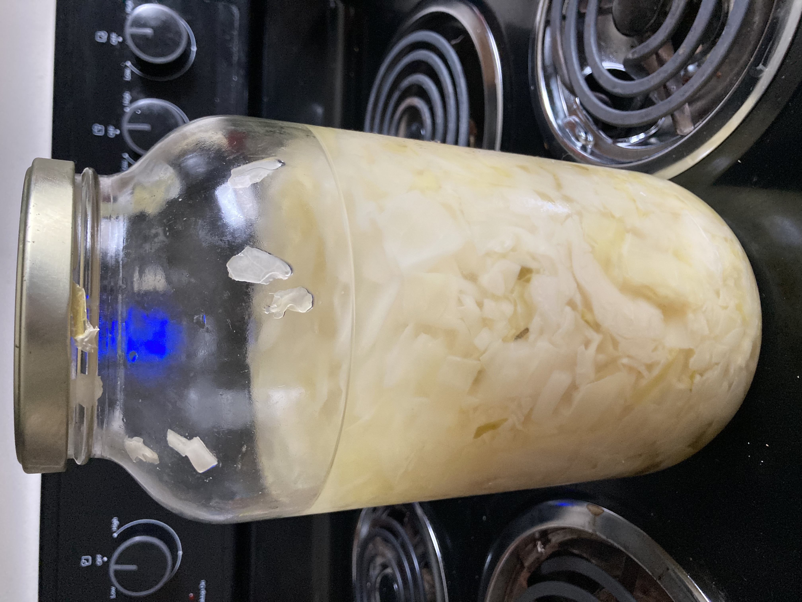
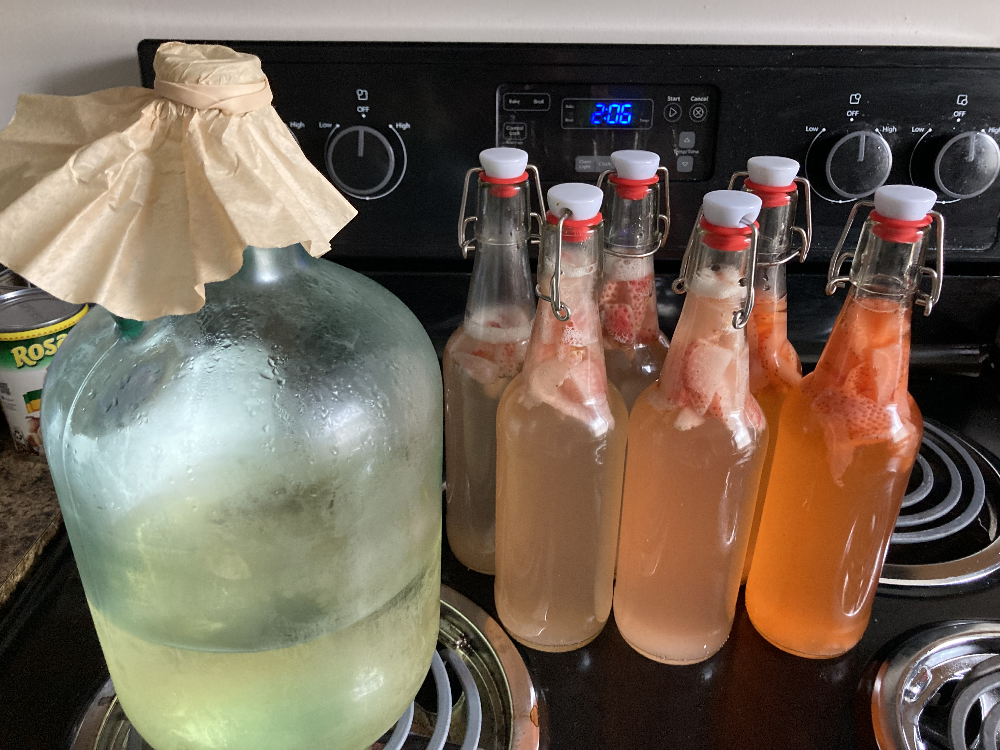

I have always liked how information is all connected one way or another and how these connections can help make better decisions. Kaggle competitions really help me push myself in learning new techniques and strategies to use for specific situations. I feel like It really prepares me for the everchanging enviroment of this field.
I started running to get in shape off and on every Summer and enjoyed the mile or so run everyday. My mindset changed recently when one of my close friends completed an ironman making me want to push the limits to see what I can do. Now I run almost evveryday in preparation to beat a 4:40 mile
Plants are fasionating to me. Between their adaptability, nutrients they provide, and the mass amount of varients their are amazes me. I also started liking genetics in middle school as genetic engineering started to get more news. Ever since then I have read books/researched online about genetics and genetics/genetic engineering. I hope to one day genetically engineer my own plants once I have space for a small lab
Just recently I have been doing a ton of research on fremented foods and drinks. I really enjoy the process of making these things that end up being healthier just by allowing certain bacteria to take over I have found the two easiest things to work with (sauerkraut and water kafir) and they have both been heathy additions to my daily routine.
 